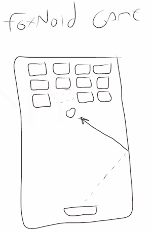

Наша игра

Эскиз Foxnoid
Всё начинается с плохо нарисованного эскиза...
Представляем Foxnoid
Наша игра будет классической игрой, в которой игрок управляет ракеткой и использует её, чтобы отбить мяч в блоки, плавающие в верхней части экрана. Как только мяч попадает в блок, он перестаёт существовать. Когда игрок очищает экран от всех блоков, то переходит к следующему уровню и имеет дело с новым расположением блоков.
Мы называем эту игру Foxnoid.
Хорошее введение в игру
Я считаю, что это великолепная игра для изучения геймдизайна и воплощения. Основные механики просты для понимания и реализации. С момента появления Pong у нас было навязчивое желание сделать прыгающий квадратный мяч с плохо нарисованной ракеткой.
Foxnoid позволяет нам представить полноценную игру с быстро движущейся графикой, разными уровнями, состояниями игры и др. Хотя это простая игра, она даёт нам возможность исследовать многие типовые задачи, с которыми сталкивается большинство разработчиков игр.
Возможности для экспериментов
Ещё один позитивный момент заключается в том, что у нас есть много возможностей для экспериментов, так как механика хорошо понятна. Мы можем экспериментировать с различными идеями, вроде того, что смена рисунков повлияет на атмосферу игры, изменение механики сделает игру сложнее или добавит больше веселья и т. д.
Вы можете действительно хитрить с механикой. Предположим, есть блоки двух цветов и игрок должен вначале убрать один цвет перед другим. Это приведёт к тому, что взрослые люди начнут плакать. Или представьте блок особого цвета, который при попадании по нему порождает новый мяч на экране и их в итоге окажется целая толпа.
Когда вы вместе с книгой придёте к завершению игрового проекта, то у вас вероятно появится много идей по его улучшению. Используйте свой журнал геймдизайна, чтобы сохранить их и проверить в дальнейшем.
Взгляд на общую картину
Ещё один важный аспект, почему я выбрал для реализации эту конкретную игру, кроме моей любви к прыгающим штукам — это казуальная двумерная аркада, которая хорошо подходит для мобильных платформ с характеристиками начального уровня.
Двумерные экшены, аркады и головоломки занимают самую большую долю на рынке мобильных игр. 3D, симуляторы, стрелялки, RPG — все вместе они охватывают большой кусок и более сложны для реализации.
Устройства на Firefox OS, в основном, начального уровня и ориентированы на развивающиеся рынки. Это сегмент, в котором двумерные казуальные игры блистают. Если бы эта книга называлась Развивающие игры для Sony Playstation 4, мы бы, вероятно, выбрали некоторые трёхмерные блестящие штучки, но не в нашем случае.
Наш план
План состоит в реализации игры Foxnoid для Firefox OS. Для этого мы собираемся принять на вооружение фреймворк для разработки игр под названием Phaser. Многие читатели, вероятно, уже спрашивают, почему я взял фреймворк, вместо того чтобы работать с сырым JavaScript и ответ в том, что эта книга называется Разработка игр для Firefox OS, а не Разработка игровых движков для Firefox OS.
Представьте, что вы взяли поваренную книгу и она начинается так: «сначала найдите хорошо орошаемую землю и посадите все овощи, которые вам понадобятся...». Обучение разработке игр через построение игровых движков подобно планированию поездки через конструирование собственного автомобиля. В конце концов, это может быть восхитительным приключением, но это не то, к чему мы здесь стремимся.
Если бы мы решили двигаться без фреймворка или библиотеки, то я должен был бы научить вас блиттеру изображений, преобразованию кодов клавиш в полезную информацию и многому другому. Мы потеряли бы слишком много времени на мелочи, которые были решены ещё до того, как вы решили что они нужны в вашей игре.
Создание игровых движков с хорошей производительностью и юзабилити очень сложная работа, которая требует специальных навыков. Вы можете создать очень хорошие игры на сыром JavaScript, но большинство геймдизайнеров не всегда начинают с чистого листа. Те, кто не используют фреймворки или библиотеки, будут разрабатывать свои, а затем использовать их.
Я не против разработки собственного фреймворка, но если бы мы сделали это здесь, то в конце концов вы бы программировали ваши игры, используя мой собственный фреймворк, который не будет так хорош, как Phaser, потому что эти люди знают об игровых движках гораздо больше меня. Вместо изобретения колеса и выполнения плохой работы в сравнении с нынешними колёсами на рынке, я решил выбрать хорошее бесплатное и открытое колесо под названием Phaser.
Знайте, что это книга не обучит вас Phaser. Мы просто используем Phaser для обучения концепции геймдизайна и реализации игрового проекта. Вы можете легко адаптировать содержимое к другим фреймворкам или написать свой собственный движок. Мы строим полку с помощью молотка под названием Phaser, а никто не спрашивает имя молотка. Тем не менее, Phaser является лучшим найденным молотком.
Почему Phaser?
Прежде, чем мы начнём перепалку касательно фреймворков для игровой разработки, позвольте мне объяснить, почему я выбрал Phaser в качестве нашего инструмента.
Батарейки в комплекте
Этот фреймворк имеет внушительный набор возможностей. Большинство других фреймворков включают подобные возможностей, но я не смог найти фреймворк, в котором было бы настолько же легко использовать подобный набор. В числе возможностей заслуживающих внимания такие как: WebGL и Canvas, прелоадер, физический движок, спрайты, обработчик ввода, масштабирование, плиточная графика, поддержка мобильных браузеров, и т. д.
При создании Foxnoid мы не будем касаться даже половины возможностей которые предлагает Phaser. Но если это ваш первый изучаемый фреймворк, то к концу книги вы получите практический опыт и сможете использовать его в будущих играх, более сложных и требующих больше возможностей.
Легко использовать
Да, есть фреймворки, которые содержат ещё больше батареек, но я до сих пор ищу что-то столь же простое как Phaser. Библиотеки либо склонны к простоте и не содержат много возможностей, либо наоборот, включают чересчур много возможностей и сложны, как армейский нож.
Phaser — это хороший компромисс между полным набором возможностей и дружелюбием к разработчику.
Большое сообщество
Ещё одной важной темой является то, что у Phaser есть большое сообщество, которое обитает на форуме HTML5 Game Devs. Там же содержится раздел посвящённый Phaser.
Это сообщество готово помогать и очень дружелюбно, что является плюсом, когда мы пытаемся использовать его, чтобы учить новых разработчиков.
Импульс
Phaser — это свободное и открытое программное обеспечение с большим сообществом и множеством возможностей. Phaser использует куча игр проверенных в боевых условиях по всему миру. Он имеет большой импульс и рост, чтобы стать, вероятно, наиболее используемым и мощным фреймворком для разработки игр на HTML5.
Не серебряная пуля
Даже Phaser не является серебряной пулей. Некоторые игры лучше сочетаются с другими решениями или даже своими собственными. Большинство новых разработчиков предполагают, что инструмент начнёт навязывать им возможности и что просто используя хороший инструмент они способны на великие дела. Я видел, как люди рисовали реалистичные пейзажи плохими красками, в то же время я не могу нарисовать квадрат с градиентом дорогой акварелью (ложь: я могу это нарисовать).
Вспомним аналогию с молотком, о котором я писал ранее: молоток — это не всё, что нужно. У меня есть шуруповёрт с подсветкой и это реально удобно. Инструмент сильно помогает мне в работе, но я мог бы сделать то же самое медленнее с помощью обычной отвертки и фонарика. Инструменты это здорово, когда они помогают вам, но вы можете построить классные вещи и без них. Важнейшим инструментом геймдизайна является геймдизайнер.
Phaser действительно отличный инструмент и поможет нам во многом. Но не думайте, что это единственный передовой путь или что вы делаете нечто неправильно, если вам нравится другое. Используйте Phaser для этой книги и посмотрите, понравится ли он вам. После этого посмотрите другие решения и выберите то, что покажется вам правильным (спорим, вы продолжите использовать Phaser).
Узнайте больше о Phaser
Для любопытных ниже мы перечислим некоторые ресурсы о Phaser.
- Официальный сайт Phaser
- HTML5 Game Devs Forum
- Phaser - HTML5 Game Devs Forum
- Документация Phaser
- Примеры на Phaser
- Исходный код Phaser на GitHub
- Discover Phaser Book. Действительно хорошая книга сосредоточенная на обучении Phaser от Томаса Палефа, ведущего программиста сообщества Phaser. Есть пакет предложений доступных для этой книги, который включает больше примеров игр. Очень рекомендую.
Резюме
В этой главе вы узнали о проекте, который мы собираемся построить, а также применяемом фреймворке. Ещё мы немного поговорили о молотках.
Со всем сказанным давайте приступим к созданию нашей игры.